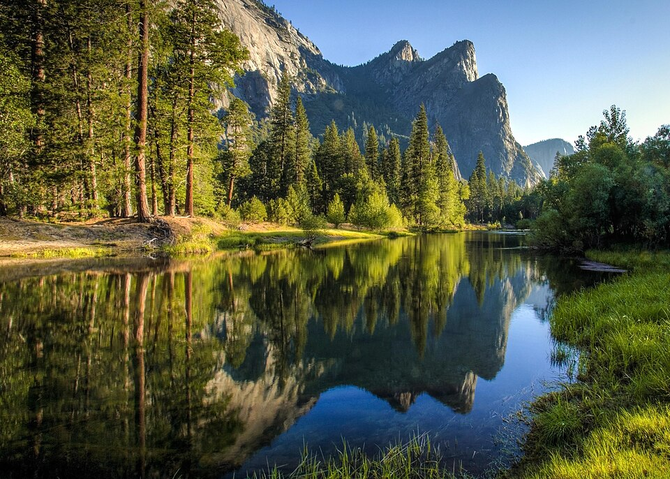
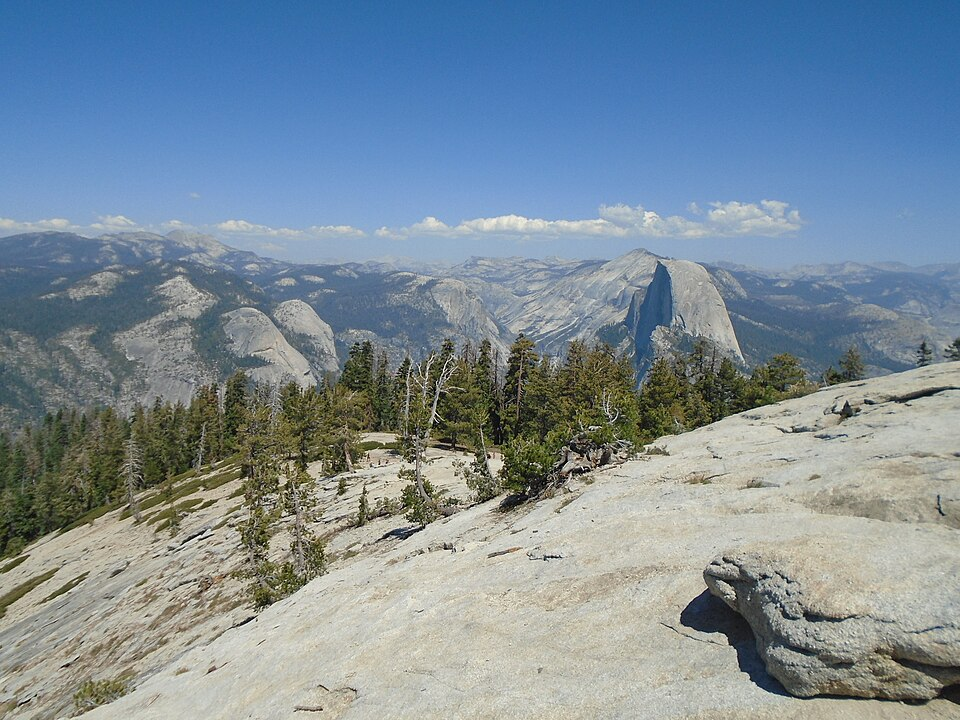

Option A ✓ Recommended
Glacier Point Road + a Sentinel Beach dip
Both worlds — a cold river swim and the iconic high viewpoints.
- Arrive in the Valley around midday.
- Yosemite Valley gift shop — give it proper time: souvenirs, postcards, a poster or two. (Gift shops at the Village Store and Yosemite Valley Lodge.)
- Cool off / picnic at Sentinel Beach Picnic Area on the Merced — sandy beach, calm shallows, picnic tables, a cold snowmelt dip. Cathedral Beach Picnic Area is a near alternative.
- Drive up Glacier Point Road (~45–60 min, winding).
- Glacier Point + Washburn Point — drive-up viewpoints minutes apart; banked regardless of how trailhead parking goes.
- Sentinel Dome / Taft Point trailhead — one trailhead, two trails: park once. Stronger hikers take Sentinel Dome (~2.2 mi round trip, ~400 ft gain, a short steep granite scramble at the top to a 360° summit); others take Taft Point (~1.1 mi each way, flat, to the fissures and clifftop). Regroup at the car.
- Tunnel View on the golden-hour drive back down.
🅿️ Parking: the small trailhead lot fills fast — midday is the worst window, but it eases by mid-afternoon (about when you'll have driven up). If it's full, use the roadside overflow within walking distance — don't circle.
⚠️ Water safety: June water is snowmelt — cold, and the Merced runs faster and higher than it looks. Stay in the calm shallows at the beach areas; never swim near or above waterfalls.